Was du in diesem Tutorial lernst:
In den letzten Tutorials hast du gelernt, was ein Vektor und was ein Data Frame ist, und wie du damit in R arbeiten kannst.
In diesem Tutorial werden wir unsere Kenntnisse über Objekt- und Datentypen vertiefen. Insbesondere werden wir uns mit den Skalenniveaus auseinandersetzen, um ein umfassenderes Verständnis für die Arbeit mit verschiedenen Datentypen in R zu entwickeln. Wir werden lernen, wie man kategoriale Variablen erstellt und zusätzlich werfen wir einen genaueren Blick auf ordinale Variablen und lernen, wie man diese ordnet. Am Ende dieses Tutorials wirst du gelernt haben, warum diese Konzepte wichtig sind und wie sie deine Arbeit mit R effizienter und effektiver gestalten können.
Skalenniveaus
Kurzfassung
„Messen ist eine strukturerhaltende Abbildung eines empirischen in ein numerisches Relativ”
Was heißt das genau?
Es bedeutet, dass Beziehungen echter Objekte als Beziehungen zwischen Zahlen ausgedrückt werden können, und dass dieser Prozess “Messen” heißt.
Das ist immernoch kompliziert. Hier ist ein konkretes Beispiel:
Genauestens erklärt
Das sind erstmal sehr viele Begriffe, die unglaublich verwirrend klingen und das ist total okay, immerhin ist das ein organisch gewachsenes Feld, wo immer mal wieder eine Person dachte: “Hey, da bring ich doch nochmal etwas Licht ins Dunkel”. Das Resultat liegt vor uns und ist zwar hell erleuchtet, aber erstmal eher verwirrend als einleuchtend. Keine Sorge, es ist nicht so kompliziert, wie es zunächst wirkt.
Wichtig ist, dass du am Ende eine Idee davon hast, was nominale, ordinale und metrische Daten sind (die, die es besonders ernst nehmen können sich noch den Unterschied zwischen Intervall-, Verhältnis- und Absolutsskala merken) und du die richtigen Begriffe einer der drei Skalenarten zuordnen kannst (nicht groß weiter erklären, einfach vertstehen).
Für den Einstieg was Süßes:
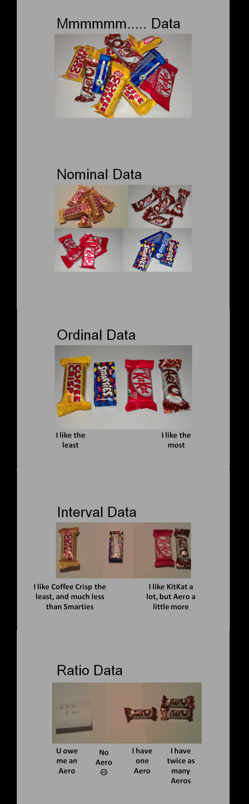
Dieses Beispiel soll die Unterschiede der verschiedenen Skalen für dich greifbar machen.
▼ Hier kannst du dein Verständnis mit weiteren Beispielen sowie einem freundlichen Guide durch all diese Begriffe vertiefen
Das Schokobild fasst eigentlich alles zusammen. Für die Menschen, die das gerne nochmal etwas ausführlicher sehen wollen, folgt ein Entscheidungsbaum. Er ist als Gespräch mit einer Variablen über ihre Inhalte aufgebaut.
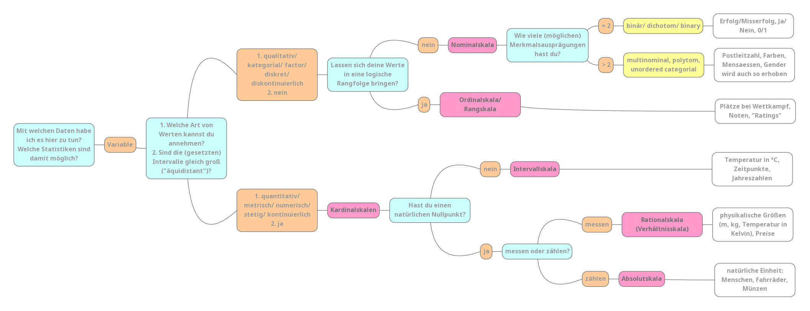
Fall 1: Nominalskala
Und auch hier was Süßes für den Anfang:
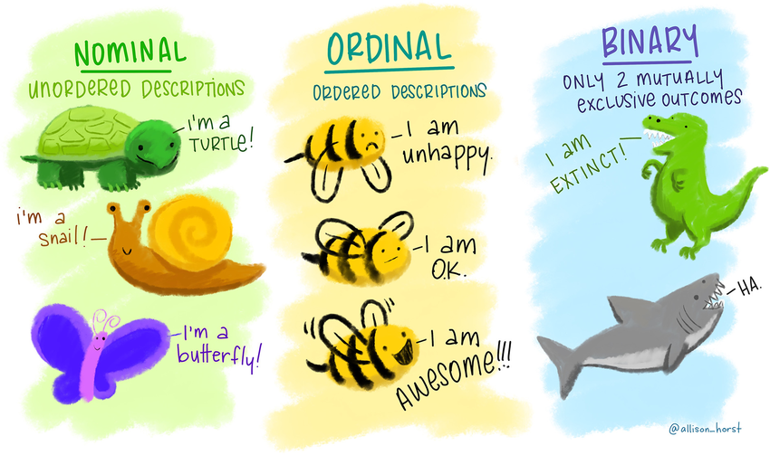
Und jetzt nochmal bisschen ausführlicher…
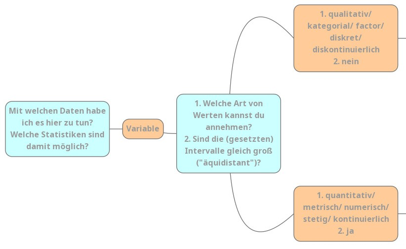
- Forschende: “Mit welchen Daten habe ich es hier
zu tun? Welche Statistiken sind damit möglich?”
- Kommentar: Deswegen werden die unterschiedlichen Skalenniveaus erst unterschieden: Von dem Skalenniveau hängt ab, was du damit rechnen kannst und darfst.
- Variable: “Hi! Du stellst Fragen und ich Antworte!”
- F: Welche Art von Werten kannst du annehmen?/
Sind die (gesetzten) Intervalle gleich groß (“äquidistant”)?
- Kommentar: zu 2. Bei so ungewohnten und teilweise
neuen Wörtern hilft es mir immer, mir deren Ursprung klar zu machen.
Hier: äquidistant: gleich weit voneinander entfernt.
Das ergibt total viel Sinn:
- äqui kennst du aus “Äquivalenz” = “gleich”
- distant: kennst du aus “Distanz” = “Entfernung”
- bedeutet also, dass die Einheiten der Skala gleich weit voneinander entfernt sind - z.B. bei einem Lineal sind ja alle Striche gleich weit voneinander entfernt, in schlau also “die Striche sind äquidistant”
- Kommentar: zu 2. Bei so ungewohnten und teilweise
neuen Wörtern hilft es mir immer, mir deren Ursprung klar zu machen.
Hier: äquidistant: gleich weit voneinander entfernt.
Das ergibt total viel Sinn:
- Variable: “In diesem Fall: 1.: Meine Werte
können qualitativ bzw. kategorial bzw. factor bzw. diskret bzw.
diskontinuierlich sein und sind damit automatisch 2.
nicht äquidistant”
- Kommentar: Diese Begriffe bedeuten für das Level
auf dem du arbeitest erstmal alle das gleiche (du kannst sie also
äquivalent benutzen, lol.) Falls es dich interessiert:
- qualitativ: eine (charakteristische) Qualität (=
Eigenschaft, Beschaffenheit) aufweisend
- Gegensatz: quantitativ: die Quantität (= Menge) betreffend
- kategorial: Kategorien (= Klasse, Gattung)
betreffend
- Gegentsatz: metrisch: messbar (gleicher Wortstamm wie Meter, deshalb als Eselbrücke: Ein Meter ist metrisch!)
- factor/ faktoriell: nach Faktoren (= Aspekten/
Bestandteilen) aufgeschlüsselt UND: zentrale Objektklasse in R zur
Berechnung genau dieser Skalen brauchen
- Gegensatz: numerisch: eine Nummer (= Zahl) betreffend; Datentyp in R
- diskret: durch endliche Intervalle oder
Abstände voneinander getrennt.
- Ein bisschen wie Sekret: etwas das abgesondert wird.
- Eselsbrücke: diskret = konkret.
- Gegensatz: stetig: beständig, kontinuierlich; (wie du es auch im Alltag nutzt)
- diskontinuierlich: nicht kontinuierlich,
unterbrochen
- Gegensatz: kontinuierlich: ununterbrochen, stetig (so wie du es auch im Alltag benutzt; auch: Kontinuum)
- qualitativ: eine (charakteristische) Qualität (=
Eigenschaft, Beschaffenheit) aufweisend
- Kommentar: Diese Begriffe bedeuten für das Level
auf dem du arbeitest erstmal alle das gleiche (du kannst sie also
äquivalent benutzen, lol.) Falls es dich interessiert:
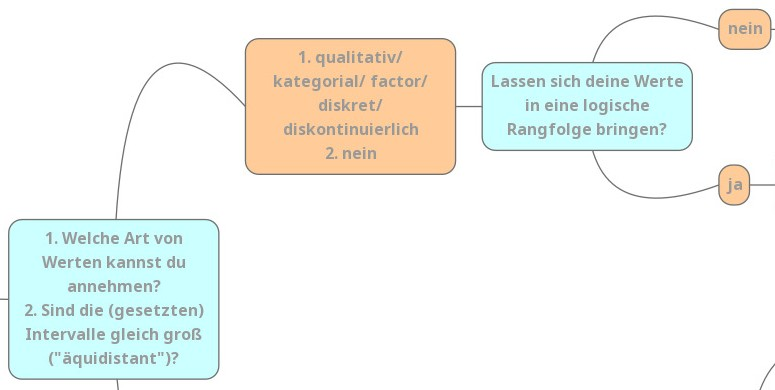
- Variable: “Will sagen: meine Werte lassen sich in ein Kategoriensystem einordnen”
- Forschende: “Ok, cool! Lassen deine Werte sich in eine logische Reihenfolge bringen?”
- V: “Nein!”
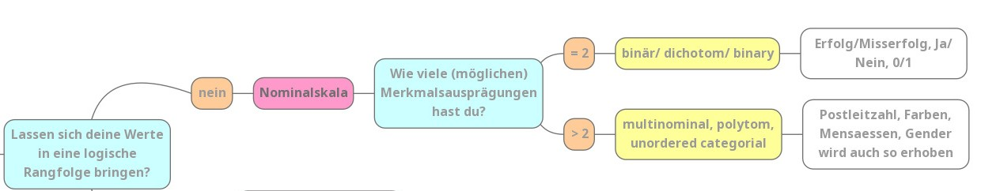
- \(\to\)
NOMINALSKALA
- Nomen: Namen. Daten können anhand von namentlichen (nicht zahlenmäßigen) Einheiten unterschieden werden
- Die Charakteristiken der Nominalskala:
- Die Merkmalsausprägungen liegen in Kategorien vor.
- Es gibt keine logische Rangfolge
- Beispiele: Prüfung bestanden? Farbe deine Fahrrades?
- Zugelassene logische Operaturen sind gleich (\(=\)) und ungleich (\(\neq\))
- rot \(=\) rot
- rot \(\neq\) grün
- Es wird noch einmal zwischen binären und
multinominalen Skalen unterschieden. Das ist so, weil
manche Statistiken sich nur mit binären bzw. multinominalen Variablen
rechnen lassen.
- binär: zwei Ausprägungen verwendend; Wortstamm: Bi: Zwei (wie in Binärcode, Bisexualität oder auch non-binär)
- multinominal: mehrere Ausprägungen verwendend
- Multi: Viel (Multivitaminsaft)
- nominal: den Nennwert betreffend; s. Nomen weiter oben
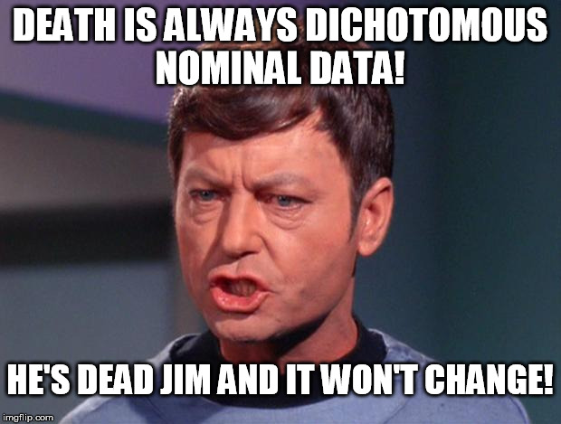
Fall 2: Ordinalskala
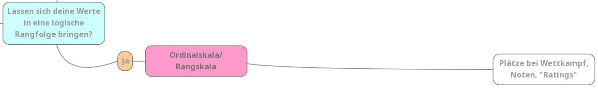
- Forschende: “Okay, also deine Werte sind diskret. Lassen sie sich in eine logische Rangfolge bringen?”
- V: “JA!”
- \(\to\) ORDINAL- /
RANGSKALA
- Ordinal: eine Ordnung (Rangfolge) anzeigend
- Die Charakteristiken der Ordinalskala:
- Die Merkmalsausprägungen liegen in Kategorien vor, welche eine logische Rangfolge haben
- Beispiele: Kleidergrößen (S < M < L), Plätze bei Wettkämpfen (1 < 2 < 3)
- Zugelassene logische Operaturen sind neben gleich (\(=\)) und ungleich (\(\neq\)) auch kleiner (\(<\)) und größer (\(>\))
- S \(=\) S
- S \(\neq\) M
- S \(<\) L
- L \(>\) M
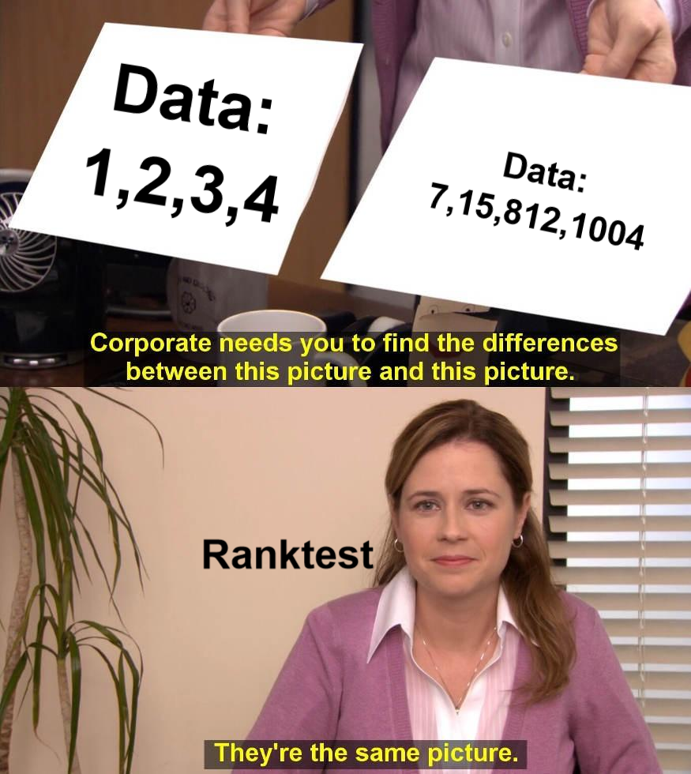 *Erklärung: Für den statistischen Rangtest ist dabei egal, wie groß die Abstände zwischen den Ausprägungen sind, solange diese zu den vergleichenden Ausprägungen gleich gerichtete sind (die Differenz von 1-7 das gleiche Vorzeichen wie 2-15, 3-812 usw. hat). Möchtest du mehr dazu erfahren, bietet diese Webseite eine gute Zusammenfassung.
Fall 3: Intervallskala
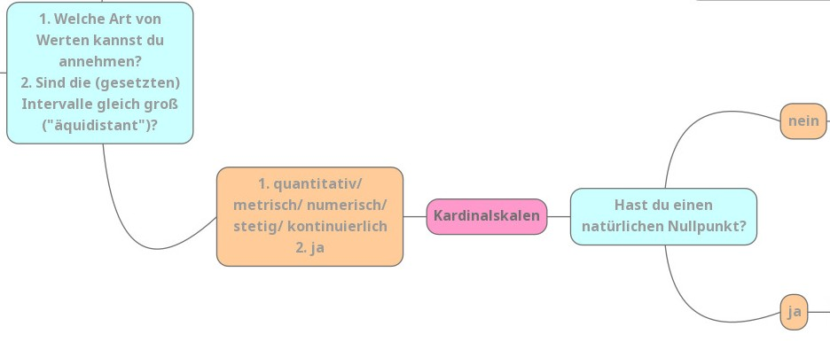
- Forschende: “Ich mal wieder. 1. Welche Art von Werten kannst du annehmen?/ 2. Sind die (gesetzten) Intervalle gleich groß (”äquidistant”)?“
- Variable: “1. quantitativ/ metrisch/ numerisch/ stetig/ kontinuierlich. 2. ja”
- \(\to\)
KARDINALSKALEN:
- kardinal: besonders wichtig, vorzüglich (weil wir damit besonders viele besonders gute Statistiken rechnen können)
- zum merken: ein Kardinal in der katholischen Kirche ist der höchste Würdenträger nach dem Papst - also auch besonders wichtig
- F: “Okay, eine letzte Frage noch: Hast du einen natürlichen Nullpunkt?”
- V: “Nö!”
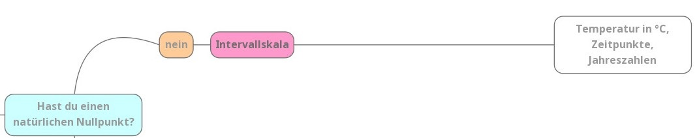
- \(\to\)
INTERVALLSKALA:
- Intervall: Bereich zwischen zwei Punkten auf einer Strecke oder Skala. Die Unterschiede auf dieser Skala werden in Intervallen angegeben und sind alle gleich groß.
- Die Charakteristiken der Intervallskala:
- Die Merkmalsausprägungen liegen äquidistanten (gleichgroßen) Intervallen vor
- Beispiele: Temperatur in Grad Celsius, Jahreszahlen
- Zugelassene logische Operaturen sind neben gleich (\(=\)), ungleich (\(\neq\)), kleiner (\(<\)) und größer (\(>\)) auch Plus (\(+\)) und Minus (\(-\))
- 10°C \(=\) 10°C
- 10°C \(\neq\) 15°C
- 10°C \(<\) 20°C
- 10°C \(>\) 5°C
- 10°C \(+\) 1°C \(=\) 11°C
- 10°C \(-\) 2°C \(=\) 8°C
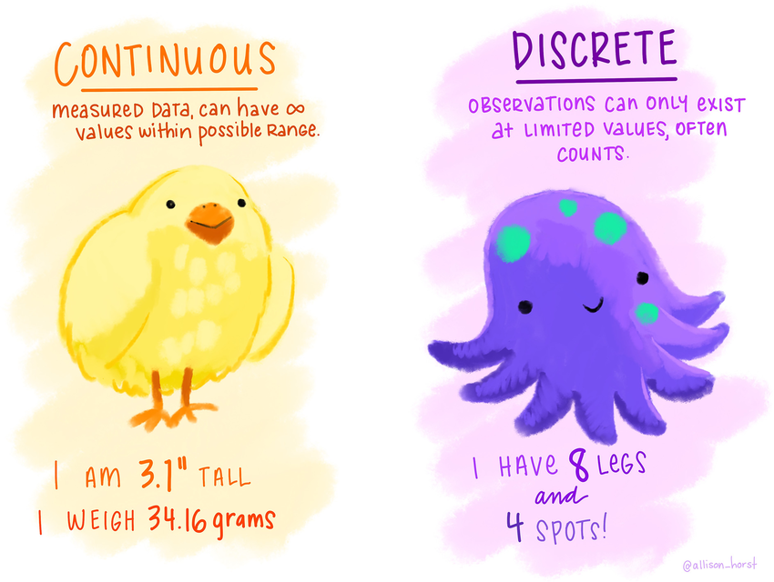
Fall 4: Verhältnisskala/ Rationalskala
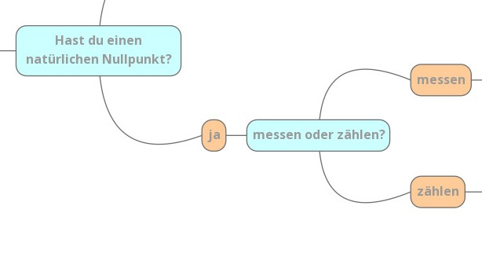
- Forschende: “Okay, deine Daten sind numerisch. Haben sie einen absoluten Nullpunkt?”
- Variable: “Ja!”
- F: “Erhebe ich deine Daten mit messen oder zählen?”
- V: “Messen.”
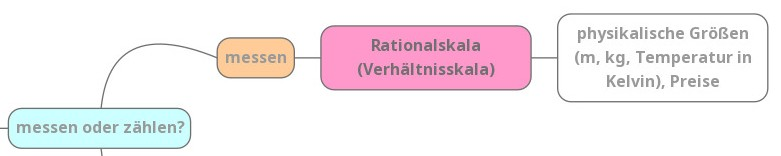
- \(\to\) RATIONAL-/
VERHÄLTNISSKALA
- Ratio: Vernunft
- rational: vernünftig
- Eselsbrücke: Wer vernünftig ist, ist verhältnismäßig.
- Charakteristiken der Verhältnisskala:
- bildet Verhältnisse von Zahlen adäquat ab
- Hat einen absoluten Nullpunkt
- Beispiele: physikalische Größen wie Meter, Kilogramm, Temperaturen in Kelvin
- Zugelassene logische Operatoren: neben \(=\), \(\neq\), \(<\), \(>\), \(+\) und \(-\) auch Multiplikationen \(\cdot\) und Divisionen \(:\)
- 1m \(=\) 1m
- 1m \(\neq\) 2m
- 1m \(<\) 3m
- 1m \(>\) 0.5m
- 1m \(+\) 4m \(=\) 5m
- 1m \(-\) 0.3m \(=\) 0.7m
- 1m \(\cdot\) 6 \(=\) 6m
- 1m \(:\) 10 \(=\) 0.1m
- Ratio: Vernunft
Fall 5: Absolutskala
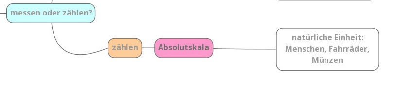
- Forschende: “Okay, deine Daten sind numerisch. Haben sie einen absoluten Nullpunkt?”
- Variable: “Ja!”
- F: “Messen oder zählen?”
- V: “Zählen!”
- \(\to\) ABSOLUTSKALA
- absolut: ganz und gar (es geht um ganze Zahlen/ Dinge/ natürliche Einheiten/ Stück)
- bildet Verhältnisse von Zahlen adäquat ab
- Hat einen absoluten Nullpunkt
- Beispiele: Menschen, Fahrräder, Münzen etc.
- Zugelassene logische Operatoren (wie Rationalskala): neben \(=\), \(\neq\), \(<\), \(>\), \(+\) und \(-\) auch Multiplikationen \(\cdot\) und Divisionen \(:\)
- 1 Fahrrad \(=\) 1 Fahrrad
- 1 Fahrrad \(\neq\) 2 Fahrräder
- 1 Fahrrad \(<\) 3 Fahrräder
- 1 Fahrrad \(>\) kein Fahrrad
- 1 Fahrrad \(+\) 4 Fahrräder \(=\) 5 Fahrräder
- 30 Fahrräder \(-\) 6 Fahrräder \(=\) 24 Fahrräder
- 1 Fahrrad \(\cdot\) 6 \(=\) 6 Fahrräder
- 20 Fahrrad \(:\) 10 \(=\) 2 Fahrräder
Zusammenfassung: Daten sind entweder in Kategorien, geordneten Kategorien oder Zahlen da. Das nennt sich: nominal, ordinal, metrisch.
<>
Schau doch mal in dem Quizz, was von diesen Inhalten so hängen geblieben ist:
Quizz zu Skalenniveaus
Skalenniveaus in R
Falls das Quizz noch nicht ganz erfolgreich war, nicht verzagen. Wir brechen es nochmal auf das Wesentliche runter:
In R können wir verschiedene Skalenniveaus finden, darunter nominale, ordinale, Intervall-, Verhältnis- und Absolutsskala. Jedes Skalenniveau hat unterschiedliche Eigenschaften und erfordert spezifische Analysemethoden. Hier eine kurze Zusammenfassung der Skalenniveaus:
Nominale Skala
- Eigenschaften: Kategorien ohne Rangfolge, nur Unterscheidung möglich.
- Beispiel: Farben (blau, rot, grün)
Ordinale Skala
- Eigenschaften: Kategorien mit Rangfolge, aber der Abstand zwischen den Kategorien ist nicht bekannt.
- Beispiel: Schulabschluss (ohne Schulabschluss, mit Schulabschluss, Abitur, Hochschulabschluss)
Intervallskala
- Eigenschaften: Bekannte Rangfolge und bekannter Abstand zwischen den Werten, aber kein absoluter Nullpunkt.
- Beispiel: Temperatur in Celsius (kein natürlicher Nullpunkt) (-2, 13, 23)
Verhältnisskala
- Eigenschaften: Bekannte Rangfolge, bekannter Abstand und absoluter Nullpunkt.
- Beispiel: Gewicht in Kg (0.2, 40, 100)
Absolutskala
- Eigenschaften: Bekannte Rangfolge, bekannter Abstand, absoluter Nullpunkt und natürliche Einheiten
- Beispiel: Anzahl an Fahrrädern im Keller (0, 3, 12)
Für dich wichtig im Umgang mit R: Die nominale und orinale Skala beinhalten kategoriale Variablen die Intervall-, Verhältnis- und Absolutskala hingegen metrische Variablen.
R bietet hauseigene Datenformate an, um Daten in unterschiedlichen Skalenniveaus gut zu repräsentieren. Hier ist eine Auswahl davon:
character: Textfactor: effizienter als Textordered factorSonderfall für ordinale Datendouble: für Zahlen
Nehmen wir folgenden Beispieldatensatz (einkaufen):
Diese Daten wurden von Studierenden im Rahmen dieser Vorlesung im WiSe 2022-23 erhoben. Dabei fokussieren wir uns auf verschiedene Fälle:
- Das lieblingsessen von Bioladenbesucher*innen (nominal)
- Das verkehrsmittel, mit dem sie zum Laden gekommen sind (nominal)
- Die frequenz, mit der sie einkaufen gehen (ordinal)
- Den weg, den sie zurückgelegt haben in Kilometern (metrisch)
Kurze Wiederholung: Hier sehen wir die obersten 6 Zeilen des
Datensatzes. Wofür könnten die kleinen Abkürzungen chr,
fctr, ord und dbl stehen?
| Abkürzung | Datenformat | geeignet für |
|---|---|---|
| <chr> | character | Text |
| <fctr> | factor | nominale Daten |
| <ord> | ordered factor | ordinale Daten |
| <dbl> | double precision floating point number | quantitative Daten |
*Bei character-Variablen werden die Inhalte als reiner
Text gespeichert.
Merke: für nominale und ordinale, also
kategoriale Variablen, bietet sich das Datenformat
factor bzw. ein ordered Factor an.
Bei metrischen Variablen können wir mit den gewohnten doubles rechnen.
Schauen wir uns also an, welche Datenformate für die Variablen in dem Beispieldatensatz genutzt wurden:
Untersuche mit der Funktion class() welche Datenformate
für die verschiedenen Variablen genutzt wurden:
essen(Lieblingsessen)verkehrsmittel(Welches Verkehrsmittel wird zum Einkauf verwendet)frequenz(Wie oft wird eingekauft in 5 Kategorien)weg(Weg in Km)
class()
class()
class()
class()class(einkaufen$essen)
class(einkaufen$verkehrsmittel)
class(einkaufen$frequenz)
class(einkaufen$weg)Was es genau mit dem Datenformat factor auf sich hat
erfährst du im nächsten Kapitel.
Kategoriale Variablen
In der Forschung werden kategoriale Variablen meist in sogenannte Codes übersetzt. So werden die Kategorien nicht mehr als Text, sondern als Zahlen repräsentiert. Dies ist v.a. beim händischen Erfassen oder Digitalisieren der Daten unablässlich, denn niemand möchte “zu Fuß” mehr als 25 Mal aufschreiben oder abtippen müssen. Stattdessen wird ein sog. Codebook erstellt, in dem die jeweiligen Codes aufgeschlüsselt werden.
Das könnte z.B. so aussehen:Da diese Verwendung von Codes gängige Praxis sind, gibt es in R einen
Befehl, der den Umgang mit kategorialen Variablen und ihren Codes
vereinfacht: factor()
Die Factor()-Funktion
Warum brauchen wir die factor()-Funktion?
Interpretation von Kategorien: Kategoriale Variablen können eine begrenzte Anzahl von Kategorien haben, z. B. Farben, Geschlecht oder Verkehrsmitteltypen. Der Befehl
factor()weist diesen Kategorien Beschriftungen zu, um die Daten in einer für uns leicht verständlichen Form darzustellen.Ordinalität beachten: Bei ordinalen kategorialen Variablen, bei denen die Reihenfolge der Kategorien wichtig ist (z. B. Bildungsniveau - Grundschule, Mittelschule, Hochschule), ermöglicht
factor()die korrekte Berücksichtigung dieser Ordnung.Unterstützung in R-Funktionen: Viele R-Funktionen, insbesondere für statistische Analysen und Datenvisualisierung, sind darauf ausgelegt, mit faktorisierten Variablen zu arbeiten. Dies erleichtert die Interpretation von Ergebnissen und die Erstellung aussagekräftiger Grafiken.
Vermeidung von unerwartetem Verhalten: Wenn wir numerische Codes ohne
factor()verwenden, könnte R die Variable als kontinuierlich interpretieren und unerwartetes Verhalten in statistischen Analysen oder Visualisierungen verursachen.
Wir benutzten also den Befehl factor(), denn er hilft
dabei, kategoriale Variablen korrekt zu repräsentieren, was für die
Analyse und Interpretation von Daten in R von entscheidender Bedeutung
ist.
Erklärung der Funktion
Schauen wir uns also an, wie du diesen nützlichen Befehl verwenden kannst.
In der Hilfe-Seite siehst du, dass der Befehl verschiedene Argumente
hat:
factor(x = character(), levels, labels = levels, exclude = NA, ordered = is.ordered(x))
- x: Hier gibst du den Vektor oder die Spalte eines Data Frames an, den du in einen Faktor umwandeln möchtest.
- levels (optional): Hier kannst du die eindeutigen Werte oder Kategorien für deine kategoriale Variable festlegen.
- labels (optional): Dieses Argument erlaubt es dir, textuelle Beschreibungen (Labels) für die einzelnen Levels der kategorialen Variable zuzuweisen. Diese sollten exakt der Aufzählungsreihenfolge der Levels entsprechen!
Beispiel
Nehmen wir an wir haben einen Vektor an Verkehrsmitteln für den wir folgendes Codebook erstellt haben:
| Level | Label |
|---|---|
| 1 | Auto |
| 2 | Zu Fuß |
| 3 | Fahrrad |
| 4 | ÖPNV |
Die Level sind also die Zahlen 1-4 die wir respektive für die
Kategorien Auto, Zu Fuß, Fahrrad
und ÖPNV nutzen.
Das sieht in R dann so aus:
# Erstellen eines Beispielvektors
verkehrsmittel <- c(1,2,3,2,4,2,1,3,4,2)
# den Vektor in einen Beispiel-Data-Frame laden
df <- data.frame(verkehrsmittel)
# dieser Code dient nur zur Veranschaulichung des Konzepts, dass level und label aufeinander abgestimmt sein müssen
df$verkehrsfactor <- factor(df$verkehrsmittel,
levels = c(1,2,3,4),
labels = c("Auto", "Zu Fuß", "Fahrrad", "ÖPNV")
)
# levels()
levels(df$verkehrsfactor)
dfDer Befehl levels() zeigt dir an, welche Werte dein
Factor annehmen kann. Dabei gibt R uns nun nur noch die entsprechenden
label aus, die wir den Werten zugewiesen haben.
Wir sehen, der df$verkehrsfactor zeigt ebenfalls nur
noch die - für uns leicht interpretierbaren - Labels des
Vektors verkehrsfactor an.
Es ist also wirklich extrem wichtig, dass du bei der Benennung deines
factors darauf achtest, dass du die Zuordnung von levels
und labels mit dem jeweils richtigen Element in der
richtigen Reihenfolge durchführst, denn von jetzt an wird R dir nur noch
die Label anzeigen.
Ordinale Daten
Da auch ordinale Daten kategorial sind, sollten auch hier Faktoren
genutzt werden. Da hier eine Rangfolge der Kategorien herrscht, sollte
diese auch in den Daten verteten sein. In R kannst du ordinal skalierte
Vektoren erstellen, indem du das Argument ordered = TRUE im
factor()-Befehl verwendest. Dies signalisiert R, dass die
Werte eine bestimmte Ordnung haben. Setzt du das logische
Argument ordered = FALSE so geht R davon aus, dass
die Werte keine Ordnung haben.
Im Allgemeinen gilt: Wenn die Reihenfolge der Levels für die Interpretation wichtig ist (wie bei “niedrig”, “mittel”, “hoch”), ist es sinnvoll, den Faktor als geordnet (ordered = TRUE) zu kennzeichnen, um sicherzustellen, dass die Reihenfolge bei grafischen Darstellungen und statistischen Analysen korrekt berücksichtigt wird.
Source: Youtube.com
Schauen wir uns ein Beispiel dazu an. Hier wurden die Level nicht als
numerischer Code gespeichert, sondern sind bereits als Text hinterlegt
(z.B. bei online erfassten Daten nicht unüblich), daher arbeiten wir
hier nur mit den levels und benötigen die
labels nicht.
# Beispielvektor
beispiel_vektor <- c("niedrig", "mittel", "hoch", "mittel", "niedrig")
# Vektor erstellen und nicht sortieren
factor_vektor <- factor(beispiel_vektor, ordered = FALSE, levels = c("niedrig", "mittel", "hoch"))
# Level anpassen
sortierter_vektor <- factor(factor_vektor, ordered = TRUE, levels = c("niedrig", "mittel", "hoch"))
beispiel_vektor
factor_vektor
sortierter_vektor▼ Was fällt dir an der Ausgabe auf?
Der Befehl hat dazu geführt, dass die Levels mit “<” versehen werden, um zu zeigen, in welcher Rangfolge diese organisiert sind.
Sehen wir uns ein weiteres Beispiel an:
Auch hier kannst du die Werte mittels des Argumentes
ordered = TRUE sortieren. Dazu schauen wir uns aus dem
Beispieldatensatz die Variable frequenz an. Diese ist
ordinalskaliert und die ersten 20 Einträge sehen so aus:
## Warning: Unknown or uninitialised column: `Frequenz`.## NULLWenn du das Argument ordered = auf TRUE
setzt, dann speichert R die Level in einer Reihenfolge. Doch Obacht: R
kann ja die Inhalte nicht lesen. Das bedeutet, dass R das nach dem
zweitlogischsten Schema sortiert: Anfangsbuchstaben (kommen ja keine
Zahlen vor).
Deswegen musst du R auch noch sagen, in welcher Reihenfolge die Level
gespeichert werden sollen. Das machst du mit dem Argument
levels = c()". Dort gibst du die Reihenfolge vor. Um das zu
demonstrieren ist die Variable Frequenz zurücktransformiert in einen
schlichten unsortierten character Vektor mit dem Namen
frequenz.
head(frequenz, 20)
# als factor speichern.
frequenz <- factor(frequenz)
# oh no! das ist ja die falsche Reihenfolge. Deswegen nochmal von vorn:
levels(frequenz)
# den factor mit levels definieren und R mittels ordered = T anzeigen, dass diese in einer Rangfolge sind
frequenz <- factor(frequenz,
levels = c("mehrfach die Woche", "einmal die Woche", "alle zwei Wochen", "einmal im Monat", "seltener"),
ordered = T)
levels(frequenz) # Puh! jetzt ist ja alles gut :)Du wirst wahrscheinlich gemerkt haben, dass R bei der Rangfolge davon
ausgeht, das diese mit jedem Item steigt (klein < größer < am
größten). Daher ist es sauberer die levels auch
entsprechend dieser Rangfolge einzugeben.
Versuch es doch einmal selbst:
Erstelle für die Variable datum einen
ordered factor namens ordereddate und lasse
dir diesen anzeigen.
# lasse dir zuerst anzeigen welche Werte
# die Variable `datum` enthält
table(einkaufen$datum)
# erstelle hier den ordered factorordereddate <- factor(einkaufen$datum, levels = c(), ordered = )ordereddate <- factor(einkaufen$datum, levels = c("2022-11-09", "2022-11-10", "2022-11-12", "2022-11-14"), ordered = TRUE)
ordereddateWOW! Das war gar nicht so leicht! Super gemacht! Dir sind bei der Ausgabe wahrscheinlich die “NA”s aufgefallen, um die werden wir uns in einem kommenden Tutorial kümmern, wenn es darum geht, die Daten zu “säubern”.
Für dieses Tutorial hast du es jetzt erstmal geschafft. 🥳
Abschlussquiz
Learnings
So hast du heute abgeschnitten:
Zusammenfassung
Herzlichen Glückwunsch! Du hast nun die Grundlagen des Umgangs mit verschiedenen Skalenniveaus in R kennengelernt. Diese Kenntnisse werden in deiner Reise durch die Datenanalyse von unschätzbarem Wert sein. Hier sind einige Punkte, die du behalten solltest:
Skalenniveaus: Verständnis der Skalenniveaus (nominal, ordinal, metrisch) ist entscheidend, um geeignete Analysemethoden auszuwählen und die Ergebnisse korrekt zu interpretieren.
Faktoren in R: Der Einsatz von Faktoren in R ermöglicht es dir, kategoriale Variablen effizient zu verwalten. Der
factor()-Befehl ist besonders nützlich, um numerische Codes mit aussagekräftigen Labels zu versehen.Geordnete Faktoren: Durch die Kennzeichnung von Faktoren als geordnet (
ordered = TRUE) kannst du sicherstellen, dass die richtige Reihenfolge bei grafischen Darstellungen und statistischen Analysen berücksichtigt wird.Kontextbezug: Denke daran, dass die Wahl des Skalenniveaus und die korrekte Verwendung von Faktoren von der Art deiner Daten und deiner Forschungsfragen abhängen. Es ist wichtig, die Kontextinformationen zu berücksichtigen.
Deine Fähigkeiten im Umgang mit Skalenniveaus werden dir dabei helfen, Daten präziser zu beschreiben, geeignete Analysen durchzuführen und fundierte Schlussfolgerungen zu ziehen. Dies bildet das Fundament für weiterführende Themen in der Statistik und Datenwissenschaft. Viel Erfolg bei deinen zukünftigen R-Abenteuern!
Diese neuen Konzepte kennst du nun:
Skalenniveaus: Du verstehst die Unterschiede zwischen nominalen, ordinalen und metrischen Skalenniveaus und kannst ihre Bedeutung in statistischen Analysen erklären.
Faktoren in R: Du weißt, wie man Faktoren in R erstellt, insbesondere unter Verwendung des
factor()-Befehls, um kategoriale Variablen mit Labels zu versehen.Geordnete Faktoren: Du kannst Faktoren als geordnet markieren und verstehst, warum dies wichtig ist, insbesondere wenn die Reihenfolge der Kategorien relevant ist.
Codebook für Faktoren: Du kannst ein Codebook für Faktoren erstellen, das die Levels und Labels einer kategorialen Variable zusammen mit ihrer Bedeutung darstellt.
Neue Funktionen
eine Tabelle mit den wichtigesten Codes des Tutorials
| Code | Beschreibung |
|---|---|
factor(x) |
Erstellt einen Faktor aus einem Vektor. |
factor(x, levels ) |
Erstellt einen Faktor mit spezifizierten Levels. |
factor(x, levels, labels) |
Erstellt einen Faktor mit spezifizierten Levels und Labels. |
levels() |
Zeigt die Levels eines Faktors an. |
Credit
Dieses Tutorial wurde größtenteils von Gesa Graf und Marie Klosterkamp sowie in Teilen von Lukas Bruelheide geschrieben. Bei der Erstellung (u.a. der Beispiele, Aufgaben und Zusammenfassung) wurde in Teilen von ChatGPT gebrauch gemacht.